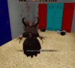
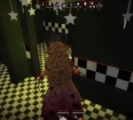

The Forest King (abbreviated as TFK, Also known as Coronation Day Peach), initially teased June 2nd, 2024, and officially added June 28th, 2024, is the tenth monster in Pillar Chase 2. He is a malevolent spirit who has possessed the corpse of Princess Peach and torments Mario when he enters the forest looking for her. He is the main antagonist of the Super Mario World ROM Hack 'the (Also known as The Coronation Day). He can be unlocked for 1485 coins in the shop.
|  When pressing 1 The Forest King begins to glitch out and fires a similarly glitchy projectile from his face in whatever direction he's looking. When this projectile hits a player, a glitchy static overlay will appear on their screen, making it harder to see and slowly damaging them. The projectile can go through walls. This also cannot kill players. |
 When pressing 2 The Forest King will summon a transparent head to chase nearby players. When a player gets near one of these heads, a creepy ambience will play on their end, their vision will gain a red tint with the word "him" appearing in multiple places on their screen, and they will become highlighted for The Forest King. Upon touching players, the heads confine them to a glitchy root that limits their movement to only a small area around it. This root vanishes after 4.5 seconds. Up to five heads can exist at once. |